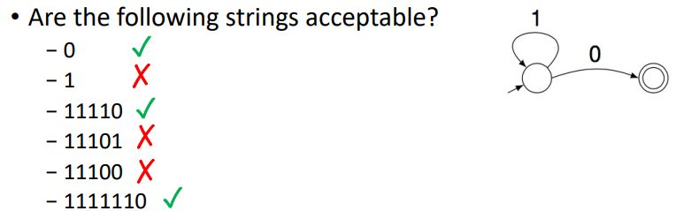
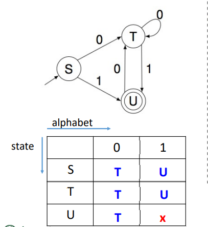
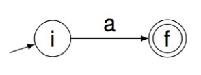
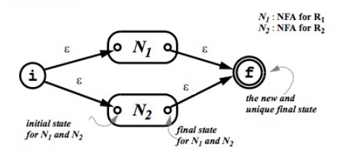
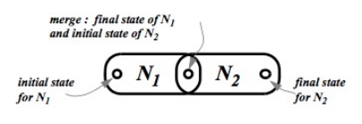
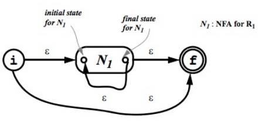
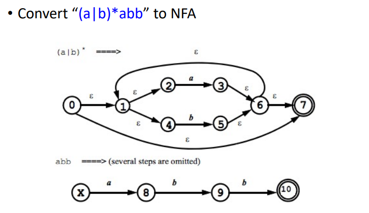

编译原理课程笔记(二)
词法分析
词法分析就是从左到右扫描，把输入的字符串按照类别识别出来，形成<class,token>的形式，我们这里使用正则表达式+flex，用C++语言写词法分析器。但如果没有这种软件，就需要自己构建一个由正则表达式给出的token识别器。这就要到FA（有穷自动机）
注意：
“文法”（例如正则文法）的结构和“自动机”的结构是不一样的，“文法”只是一个线性的符号系列,它只是说明了一种语法模式，并没有蕴含具体操作。而“自动机”是一个立体的理论“机器”，可以直接对应到具体的计算机执行逻辑。编译原理的一个很重要的任务就是要把文法转换为可执行的程序。
转换图(Transition Diagram)
1.组成
- Node：代表状态
- 开始状态：唯一，用start->指向
- 结束状态(Accepting)：可能有多个，用双重圆圈表示
- Edge：有向边，有symbol作为标签
- 从一个状态指向下一个状态
2.有穷自动机（FA）
正则表达式：定义
有穷自动机：实现lexer （FA：一个program，有有限个状态，只有一个开始状态，可以有多个终止状态）
一个自动机可以识别(accept)特定的字符串，如下图：

3.DFA and NFA
DFA：确定有限状态自动机 deterministic finite automaton
一个状态对于每一个输入只有一个跳转状态：例如A输入1跳转到B，不可能输入1既有可能到C也有可能到D
没有空转移(\(\epsilon-moves\))
一个字符串从start到accept或not accept只有一条路径
NFA：对于一个输入可以有多个跳转状态，可以有空跳转，可以选择从start到accept的路径。
3.1状态图
五个组件 \(\Sigma,S,n,F,\delta\)
字符表\(\Sigma\)
状态集合\(S\)
开始状态\(n\in S\)
accepting states的集合\(F\subseteq S\)
transition的集合: \(\delta: S_a\stackrel{\mathbf{input}}{\longrightarrow} S_b\)
- 其中input是转移条件，若input=ε，说明转移无需任何条件。
3.2构建DFA的流程
正则表达式-->NFA-->DFA-->Table
DFA-->Table：

表格的空间复杂度: \(O(S\times\Sigma)\)，时间复杂度\(O(input-length)\)
表格优点：容易找到转移路径
表格缺点：空间复杂度高，对于字符集多，转移路径少的情况不适用。
正则表达式->NFA
1.单字符：

2.组合：
- R = R1|R2

ps：两个空边不能省略！
- R = R1R2

3.复合：
- \(R=R_1^*\)

4.例子：
